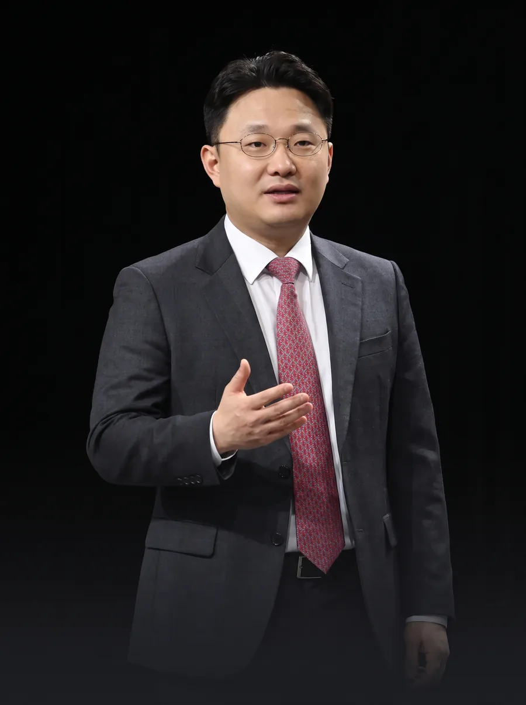
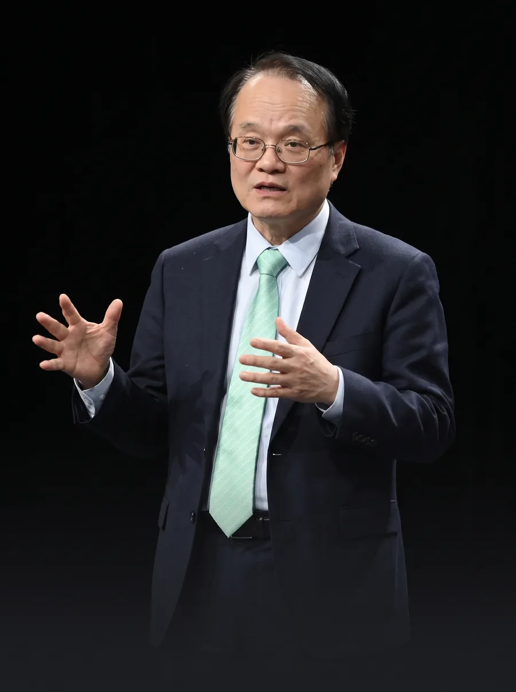
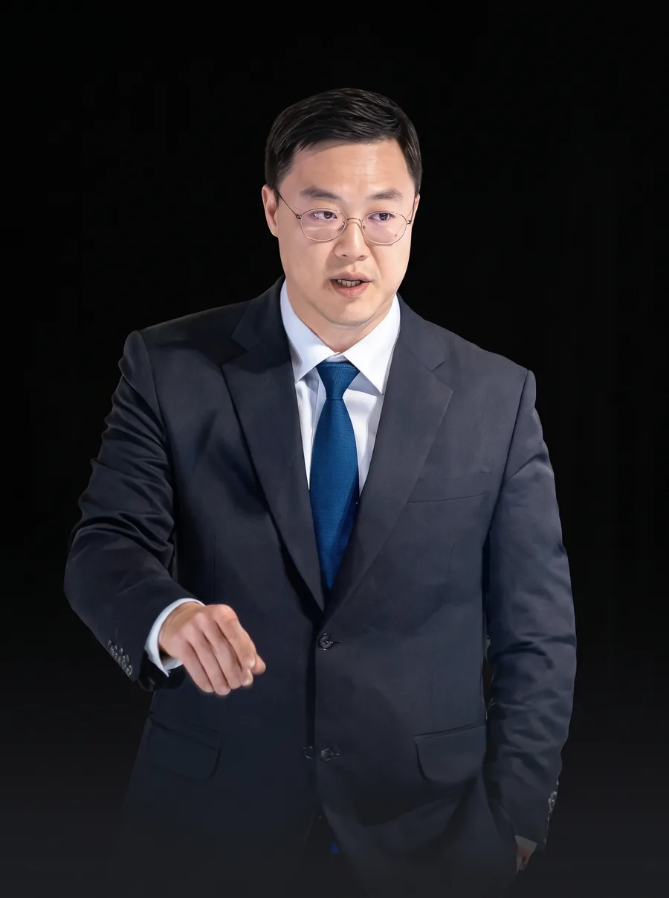

2027 전자주총 의무화, 설명회에서 프로세스를 직접 확인하세요
전자주주총회 플랫폼
시연 설명회
2026.11.30 (월) 13:00 · 페어몬트 앰배서더 서울 지하 1층(B1) 그랜드볼룸
WELCOME
참석해 주셔서 감사합니다
설명회는 13:00에 시작합니다.
등록 데스크에서 안내 받으신 좌석 번호로 가시면 테이블에 기업명이 기재된 명패를 확인하실 수 있습니다.
자리를 찾기 어려우시면 가까운 운영 스태프에게 말씀해 주세요.
행사 프로그램
13:00
개회 및 행사 안내
13:10
축사
김광록 · 정우용
13:20
한국주주총회연구소 출범식
권재열
13:25
Session 1
전자주주총회 제도 도입 및 진행 관련 주요 실무 쟁점
김승준
13:55
Session 2
상법 개정과 전자주총이 몰고 올 기업 경영의 지각변동
권재열
14:25
휴식
14:40
Session 3
Proxymity, 글로벌 의결권 행사 인프라의 혁신과 미래
Scott Oakland
15:10
Session 4
전자주주총회 도입 · 운영 방안 및 통합 솔루션 소개
박성용
15:40
휴식
15:55
모의 전자주주총회 시연
박성용
17:30
사전 질문 및 현장 질의응답
전체 연사
상기 프로그램 일정은 변동될 수 있습니다.
이용 안내
주차
등록 데스크에서 주차 지원 등록
페어몬트 호텔 주차장만 지원됩니다.
연결된 더현대 서울 주차장은 지원되지 않습니다.
현장 질문
명찰 뒷면 QR코드로 질문
현장 질의는 명찰 뒷면에 있는 QR코드로 질문을 남겨 주세요. 사전 질문과 함께 질의응답 시간(17:30)에 답변 드립니다.
Wi-Fi
[네트워크 이름]
[비밀번호]
NOTICE
잠시 후 설명회가 시작됩니다
안내받은 좌석에 앉아 주시고, 휴대폰은 무음으로 설정해 주세요.
NOTICE
설명회는 잠시 후 시작합니다
자리에 앉아 잠시만 기다려 주세요.
[인트로 영상 — assets/intro.mp4 를 넣으면 이 화면에서 재생됩니다]
개회
전자주주총회 플랫폼
시연 설명회
2026.11.30 (월) 13:00 · 페어몬트 앰배서더 서울 지하 1층(B1) 그랜드볼룸
행사 프로그램
13:00
개회 및 행사 안내
13:10
축사
김광록 · 정우용
13:20
한국주주총회연구소 출범식
권재열
13:25
Session 1
전자주주총회 제도 도입 및 진행 관련 주요 실무 쟁점
김승준
13:55
Session 2
상법 개정과 전자주총이 몰고 올 기업 경영의 지각변동
권재열
14:25
휴식
14:40
Session 3
Proxymity, 글로벌 의결권 행사 인프라의 혁신과 미래
Scott Oakland
15:10
Session 4
전자주주총회 도입 · 운영 방안 및 통합 솔루션 소개
박성용
15:40
휴식
15:55
모의 전자주주총회 시연
박성용
17:30
사전 질문 및 현장 질의응답
전체 연사
상기 프로그램 일정은 변동될 수 있습니다.
안내 말씀
1
휴대폰은 무음으로 설정해 주세요.
2
휴식은 14:25, 15:40 두 차례 15분씩 있습니다.
3
현장 질의는 명찰 뒷면의 QR코드로 남겨 주세요. 사전 질문과 함께 질의응답 시간(17:30)에 답변 드립니다.
4
설명회는 현장 참석으로만 진행되며, 온라인 생중계 · 다시보기와 발표자료는 제공되지 않습니다.
5
원활한 진행을 위해 영상 촬영은 삼가 주시기 바랍니다.
6
행사 종료 후 설문 참여 안내를 이메일로 보내드립니다.
OPENING
축사 및 출범식
전자주주총회 플랫폼 설명회 개회에 각계의 응원과 한국주주총회연구소 공식 출범을 알립니다.
축사
김광록
한국기업법학회 회장, 충북대 법학전문대학원 교수
축사
정우용
한국상장회사협의회, 전 정책부회장
[출범식 인트로 영상 — assets/kism-intro.mp4]

한국주주총회연구소 출범식
한국주주총회연구소의 공식 출범을 알립니다.
권재열 한국주주총회연구소장, 경희대 법학전문대학원 교수
PART 1
의무화가 바꾸는 주주총회
상법 개정과 전자주주총회 의무화를 법률 · 학계 관점에서 다룹니다.
Session 1 · Session 2

Session 1
전자주주총회 제도 도입 및
진행 관련 주요 실무 쟁점
김승준
김앤장 법률사무소, 변호사

Session 2
상법 개정과 전자주총이 몰고 올
기업 경영의 지각변동
권재열
한국주주총회연구소장, 경희대 법학전문대학원 교수
재개까지
15:00
BREAK
잠시 쉬어갑니다
곧 Session 3이 시작됩니다
--:--에 다시 시작합니다.자리로 돌아와 주세요.
다음 순서 · Session 3
Proxymity, 글로벌 의결권 행사 인프라의 혁신과 미래
Scott Oakland · Proxymity, Head of APAC
NOTICE
곧 Session 3이 시작됩니다
자리로 돌아와 주세요.
PART 2
전자주주총회 및
의결권 행사의 미래
글로벌 의결권 플랫폼의 시각과 IR큐더스의 통합 솔루션으로 전자주주총회 도입 · 운영 방안을 살펴봅니다.
Session 3 · Session 4
Session 3
Proxymity, 글로벌 의결권 행사
인프라의 혁신과 미래
Scott Oakland
Proxymity, Head of APAC

Session 4
전자주주총회 도입 · 운영 방안 및
통합 솔루션 소개
박성용
IR큐더스, 본부장
재개까지
15:00
BREAK
잠시 쉬어갑니다
곧 모의 전자주주총회 시연이 시작됩니다
--:--에 다시 시작합니다.자리로 돌아와 주세요.
다음 순서
모의 전자주주총회 시연
박성용 · IR큐더스, 본부장 · 참석자와 함께 모의 전자주주총회를 진행합니다.
NOTICE
곧 모의 전자주주총회 시연이 시작됩니다
자리로 돌아와 주세요. 입장 시 설치하신 [참여 앱]으로 모의 표결에 참여하실 수 있습니다.
PART 3 · DEMO
모의 전자주주총회 시연
준비부터 집계까지, 전자주총 전 과정을 그대로
모의 회사 · 주주 · 의안으로 주주총회 전 과정을 진행합니다.
01 설정
주주명부, 의안 등록,
의결권 제한
02 사전
사전 투표 ·
의결권 행사 관리
03 당일
출석, 질의,
표결, 집계
박성용 · IR큐더스, 본부장
시연에서 살펴볼 주요 실무 사례
01
결의요건 충족 여부와 가결 판정
02
최대주주 등 합산 3% 의결권 제한
03
특별이해관계자의 의결권 제한
04
수정동의 접수와 표결
05
양립불가 의안의 표결 처리
06
집중투표의 의결권 배분과 집계
07
전자주주총회 사전신청 및 총회 당일 출석
08
주주 질의 접수 및 발언 요청 승인
Q&A
사전 질문 및 현장 질의응답
신청서에 남겨주신 사전 질문과 현장에서 접수해주신 질의 내용을 확인 후 답변 드리겠습니다.
김승준김앤장 법률사무소, 변호사
권재열한국주주총회연구소장, 경희대 법학전문대학원 교수
Scott OaklandProxymity, Head of APAC
박성용IR큐더스, 본부장
Q&A
질문을 준비하고 있습니다.
THANK YOU
참석해 주셔서 감사합니다
행사 종료 후 설문 참여 안내를 이메일로 보내드립니다.
전자주주총회 도입 상담 agm@irkudos.co.kr · 02-6011-2000
주차 지원은 등록 데스크에서 등록해 주세요.
NOTICE
잠시 화면을 점검하고 있습니다
곧 이어서 진행하겠습니다.
NOTICE
진행 순서 안내

전자주주총회 플랫폼 시연 설명회